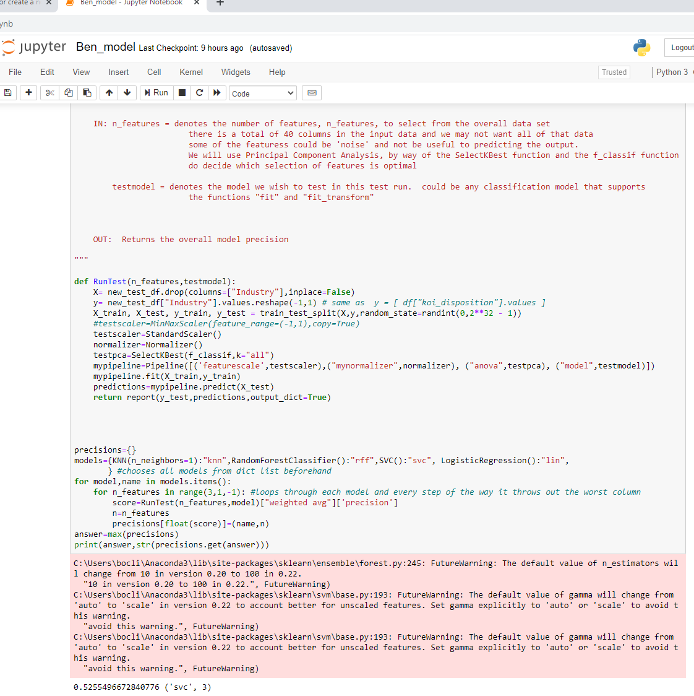

Summary: Training Models

Utilizing sqlite database queries to construct Python DataFrames in order to analyze connections between SARS reporting and other variables within dataset.
I was able to convert the "Industry" column into categorical data which was necessary for our modeling. I created a dictionary of dictionaries with the column objects inside the nested dictionary assigned to ordinal values. Afterwards, I ran the .replace() function to execute the conversion.
The model I am working with utilizes components of both supervised and unsupervised machine learning. First, a pipeline is established that scales the model, reduces dimensionality, and provides the test sample of the model all within the same cell. Then I call the dependencies and imports. RunTest() is a function that tests my model using the pipeline's preprocessing output as its parameters. Once RunTest() completes, the last step is to loop through each of the libraries I called prior to setting up the pipeline and RunTest(). All dependencies and libraries containing the statistical tests I wish to use are declared before the function, RunTest(), is executed. The cell then returns the model's precision as well as the model that yielded the highest precision score and the number of features it looped through to get those results.
In order to run our first machine learning test, I dropped columns containing string values keeping only "Count", "Year", and "Industry" and converted the "Count" column datatypes. to float using .to_numeric(). The first attempt at building a machine learning model yielded a result, which I consider to be a success. However, the results of the model were very poor at discerning a connection between our variable of interest, "Industry" and the SARS count of our study. The results yielded a precision of 0.52, which does not fair much better than a coin toss. Another problem is the inconsistency of this model as well. Rerunning the cell about five times yielded the following: 3 times result was Random Forest Classifier the optimal test for precision, then 1 time result of SVC and 1 time result of KNearestNeighbors. The precision score did not vary greatly between the five results either which may be positive in terms of precision consistency, but not so much in terms of overall reliability of the model.
A possible source for these problems may reducing too many features for any significant comparision (n=3). Without other variables, this model does not have much to work with aside from type of "Industry", "Year", and "Count" as analysis-ready variables. Assigning "Suspicious Activity"'s contents to categorical bins and running analyses on those bins may be worth looking into for further analysis.
The overall motivation behind this method of machine learning is to engage in auto-tuning the hyperparameters of model-building. Auto- mating as many aspects of machine learning would reduce the amount of human influence such as bias, mishandling of the data, mistakes setting up the tests, and other such errors. While this model is not close to removing all human influence in machine learning model- building, it is a step closer to doing so.